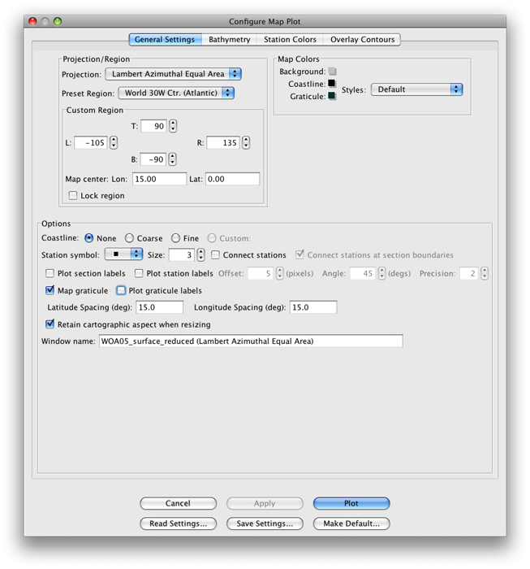
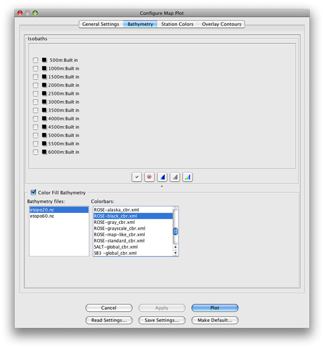
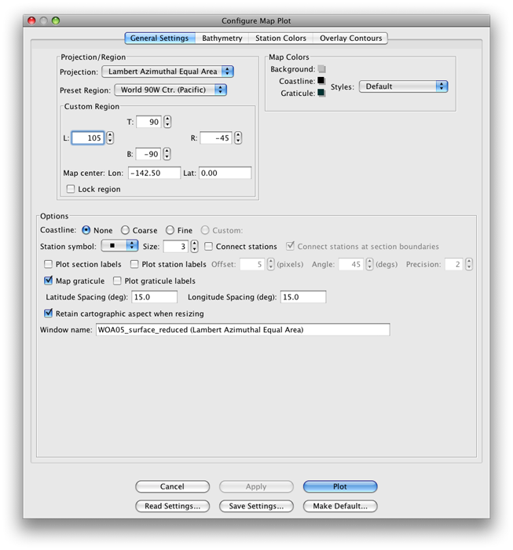
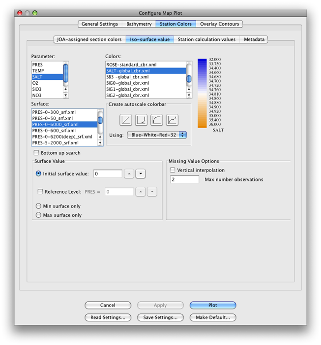

Example 4B: Surface properties of world ocean waters¶
DPO textbook references for Surface properties of World Ocean waters:
DPO 4.2.1
Surface temperature
DPO 4.3.1
Surface salinity
DPO 4.4.1
Density at the sea surface and in the upper layer
DPO 4.5
Dissolved Oxygen (at surface)
DPO 4.6
Nutrients and other tracers (at surface)
The DPO maps of surface temperature, salinity, and surface density in winter, and surface nitrate (DPO Figures 4.1, 4.13, 4.16, and 4.22, respectively ) provide a view of the global distributions of key ocean surface property distributions. We will use JOA to make similar maps, using data from the World Ocean Atlas data compilation.
(In the example below, you may wish to occasionally refer to the Chapter 3 DPO JOA Examples for some of the basics regarding JOA map plots.)
Learn More
World Ocean Atlas data files
There are many vertical profiles of temperature, salinity, oxygen, and nutrients from the World Ocean. Most profiles are of temperature alone. Second after that are profiles with temperature and salinity alone. Most of these profiles are not full-depth.
Some regions, especially in the North Atlantic Ocean and in the Northwest Pacific near Japan, have dense station coverage in both space and time. Others regions, most notably the far south Pacific and Indian Oceans, have few ocean profile data.
In general, vertical profile global coverage has proved sufficient to permit averaging on a latitude-longitude grid. The general concept used for averaging is that the analyst:
Collects and quality-controls profile data from a chosen region (for example one ocean basin or the World Ocean)
Sometimes sorts them by time (by month and/or year, for example)
Interpolates them onto chosen “standard levels” (for example chosen depths, pressures, or density surfaces)
At each level, averages data falling within bounds of some sort of chosen grid spacing
An outstanding example is the one-degree square averages onto standard depth surfaces prepared by Syd Levitus and co-workers at the US National Oceanographic Data Center in their World Ocean Atlas (WOA) compilations. Many 1-degree squares are under-represented in terms of data in WOA, but on a global scale these do not overly bias the results.
The World Ocean Atlas files are updated by NODC, and periodically a new version is disseminated. There are various WOA products. We have translated the 2009 version of the multi-year annual average WOA (known as WOA09) into a form usable by Java OceanAtlas and used it to make data files which we provide with these examples.
The profiles in the 2009 version of the multi-year annual average WOA (denoted in these examples as WOA09) contain data values, where ocean depth permits, at 0, 10, 20, 30, 50, 75, 100, 125, 150, 200, 250, 300, 400, 500, 600, 700, 800, 900, 1000, 1100, 1200, 1300, 1400, 1500, 1750, 2000, 2500, 3000, 3500, 4000, 4500, 5000, and 5500 meters. [WOA09 indexes its data values by depth (Z) instead of pressure (P).
Although Java OceanAtlas works from pressure-indexed data, for convenience, we have read the depths as if they were pressures. The numerical error (the numerical difference between depths in meters and pressures in decibars) in the upper layers is insignificant; considering the averaging and interpolation going into WOA09, it does not affect interpretation of seawater property distributions significantly at great depth.
Note
Please keep in mind, however, that when using WOA09 data files in JOA, the “pressure” data are actually values of “depth” in the original file from NODC.]
It is a challenge to use the full, global WOA09 data set in Java OceanAtlas, at least with the power and memory of a typical laptop computer and the inefficiencies of the Java environment.
Users should expect to experience negative impacts on computer performance when using the 1-degree data set. To reduce the file size of WOA09, we have eliminated from the file:
Vertical profiles on land
All values (always null values) at each profile which are below the depth of the sea floor
For example, our WOA05 profile at a continental shelf location 223 meters depth would contain data values only for 0, 10, 20, 30, 50, 75, 100, 125, 150, and 200 meters.
This data file is included with the DPO JOA Examples as a supplementary data file named WOA09.joa. It is a large binary data file that currently will work only on computers with large amounts of RAM available to Java OceanAtlas.
To make a WOA09_surface.joa data file we then extracted the surface value only for each one-degree grid point from the edited data set. This file is still a large data file for some computers to deal with. To make the WOA09_surface_reduced.joa data file, we eliminated grid points from WOA09_surface.joa according to these rules:
0.5-59.5 retain all points
60.5-74.5 cut out half of longitudes
75.5-84.5 cut out another half of longitudes
85.5-89.5 cut out another half of longitudes
Considering that meridians (lines of longitude) draw closer together poleward, this more or less maintains the distance spacing of the grid points and reduces the file size somewhat.
To make a WOA09 “reduced” data set, we started with the 2009 version of WOA and eliminated every second degree of data starting at the equator then followed through, eliminating additional grid points poleward in accord with the rules above.
Warning
data file may slow your computer!
The data file used for these “surface properties” examples is large relative to the relatively slow speed and relatively large memory usage of the Java environment.
Files that may be needed or created in this example:
WOA05_surface.jos
Exercise 4B-01: Data Files - Importing a Spreadsheet¶
Start JOA
File → Open… → WOA05_surface.jos
WOA05_surface.jos is a text data file. Due to a JOA software limitation they contain too many stations (grid points in this case) to be opened if they are in JOA binary format.
JOA will then present you with the JOA Spreadsheet Import Options dialog box:
Because this .jos data file is in tab-delimited format with the default (-99) JOA missing value markers, all you need to do here is to click on OK. JOA will then open the .jos data file into a standard JOA Data Window.
Note
If JOA on your computer cannot open the file WOA09_surface.jos, or this file severely slows down your computer, you might try opening, instead, the file WOA09_surface_reduced.jos, which is somewhat smaller.
Click OK
The resulting JOA Data Window will look something like this:
We wish to make maps of the World Ocean onto which we can plot these data.
At this writing, JOA does not offer the Robinson map projection used to make DPO Figures 4.1, 4.9, 4.15, 4.19, and 4.23.
The two global JOA map projections - Mercator and Miller Cylindrical - are highly distorted at high latitudes.
But JOA can have as many map plots open simultaneously as computer resources permit, so here we provide instructions to make two map plots, which together cover most of the World Ocean.
Exercise 4B-02: Surface Properties - Making a Lambert Azimuthal Equal Area Map Plot¶
Plots → Map…
Set up a Lambert Azimuthal Equal Area map plot with these settings (note that a Preset Region must be selected, even if it does not match the Custom Region boundaries)

FIG 4b-03 The General Settings panel of the Configure Map Plot dialog box¶

FIG 4b-04 The Bathymetry panel of the Configure Map Plot dialog box¶
Click Plot
The resulting plot will look approximately like this:
There are many profiles (“stations” in JOA terminology), on a grid-like pattern covering the World Ocean.
Plots → Map…
Set up a second Lambert Azimuthal Equal Area map plot with these settings (again noting that a Preset Region must be selected, even if it does not match the Custom Region boundaries):

FIG 4b-06 The General Settings panel of the Configure Map Plot dialog box¶
Set up the Bathymetry panel of the Configure Map Plot the same way that you set up that panel for the first map plot
The resulting plot will look approximately like this:
Now, for each map plot, bring up the Configure Map Plot dialog box:
Double-click or control-click on a map plot
Or type [ctrl/cmd]-R or Edit → Edit: plotname when a map plot is the front-most window
Adjust the Station symbol size to a large enough value that the station symbols just barely merge into a solid sheet of color over most of the map plot area
It is best for this DPO JOA Example if you use a solid square symbol, and for the illustrations here we used the default, size = 3
Select the Station Colors panel
Note
With a WOA05_surface data file, when you are setting up the Iso-surface value box in the Station Colors window of the Configure Map Plot dialog box, you must select the Min surface only option, or else the station dots on the resulting map plot will all be colored black. This has to do with a peculiarity of the WOA05_surface data files, which have only a single data level (0) at each grid point.
Set it up as shown here:

FIG 4b-08 The Iso-surface value panel of the Station Colors panel of the Configure Map Plot dialog box¶
Note
You could have set all three panels of the Configure Map Plot dialog box up in their final configuration the very first time you set up each plot. We called for sequential steps here to help make it clear which steps contribute which aspects to the two map plots.
Click OK for each plot
Your map plots will look approximately like these:
Via the Configure Map Plot dialog box’s Station Colors panel, you can select any other property and a corresponding color bar. We suggest these pairings to show off World Ocean characteristics:
TEMP
TEMP-global_cbr.xml
SALT
SALT-global_cbr.xml
O2
O2-global_cbr.xml
PO4
PO4-global_cbr.xml
SIO3
SIO3-global_cbr.xmlv
NO3
NO3-global_cbr.xml
Note
Regarding use of the PRES-0-6000_srf.xml Surface on this panel: In order to plot/color data values at stations, JOA must interpolate data onto surfaces - even if data values are already present in the data file on the desired surface. (Also, in this example, there are data present on only one surface, i.e. 0 dbar).
Hence one must select a preconfigured Surface onto which JOA interpolates the data. (See the JOA User Guide in the JOA Application for instructions on making your own custom preconfigured Surface for interpolations. You can make Surfaces for any JOA parameter, including parameters in the data file, calculated parameters, and custom-calculated parameters.)
Remember, now that you have these map plots ready, you can explore the surface ocean with them in multiple ways.
You can click on data points to read and compare data values in the Data Window.
You can select sub-areas of plots (via the standard point-click-hold-move-release mouse sequence most computer applications use for selections) and JOA will make those into new plots, which can be reconfigured as you wish.
You can change or shift projections. (Hint: Try the two polar projections.)
You can even have multiple map plots of the same area, each configured to show a different parameter so that you can explore how the various oceanographic parameters co-relate.